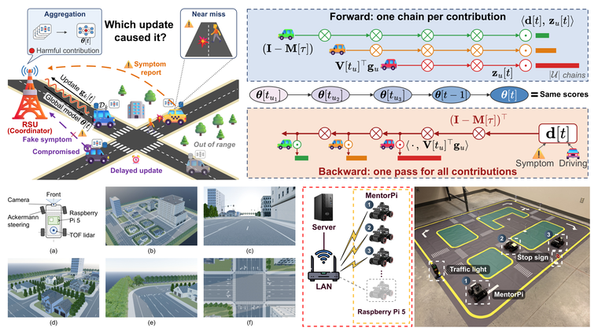
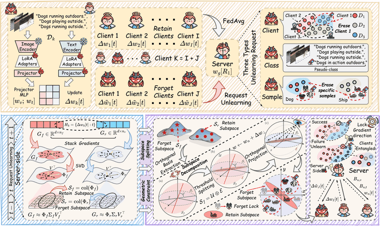
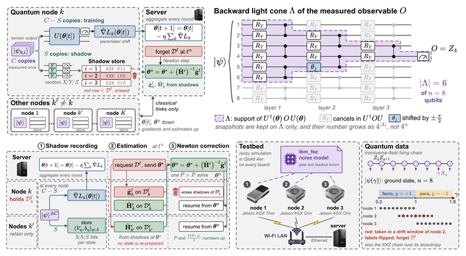
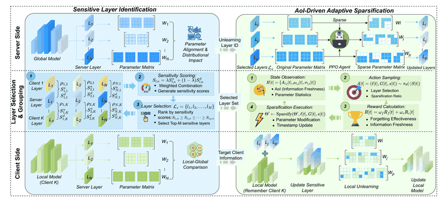
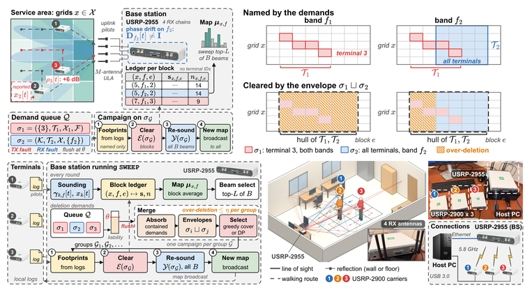
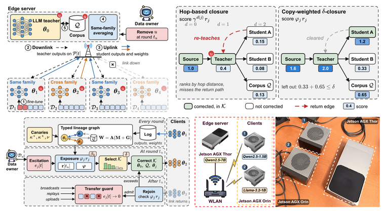
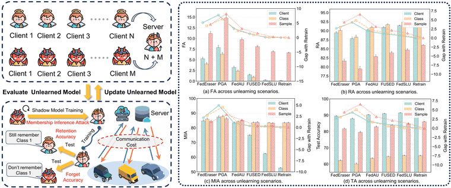
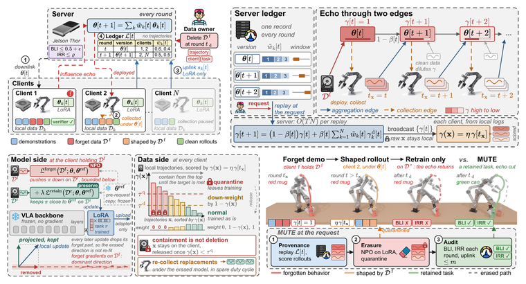

机器遗忘假设一家医院曾经用患者数据参与训练一个诊断模型，现在要求撤回这批数据。把文件从数据库中删除，可以阻止它们再次进入训练，却不会自动改变已经训练好的模型。这些记录可能已经影响了模型的预测，模型也可能泄露其中的信息。机器遗忘（machine unlearning）研究的就是：怎样移除指定数据对训练结果的影响，同时尽量保留模型的正常用途。Cao 和 Yang 的早期工作对这一问题进行了系统研究。 最直接的办法是只用允许保留的数据重新训练。重训练本身就是一种有效的遗忘方法，也给其他方法提供了参照。研究的难点在于：能不能少做一些计算，又不在不知不觉中降低要求？下面先把这个参照写清楚，再讨论集中式算法、联邦学习、大语言模型、评测，以及连续删除请求。 每一章都会落到我们自己的工作上。本文的配图全部来自我们的论文，每章一张。放这些图有一个具体的理由：定义只告诉你什么必须成立，它不会告诉你，当你真的要在一个部署系统上满足它时，系统会长成什么样子。图展示的是后者。任何一张图都不是“定义已经被满足”的证据。 先说定义里悄悄做出的一个假设。写下 \(\mathcal{D}^{\textrm{f}}\) 的前提是，有人能指出它包含哪些记录。很多时候没人指得出来。运维方只看到下游出了问题，然后必须反推回数据， 就是这种情况。  同样的落差还出现在错误标签、退出训练的参与方，以及后来才发现的投毒样本上。这些任务彼此相关，但成功标准并不相同。一个方法能修复投毒造成的准确率下降，不代表它已经移除了投毒记录对模型的全部影响。 模型“忘掉了”，究竟是什么意思？先说清楚数据和训练过程用 \(\mathcal{D}\) 表示原始训练集。一次请求指定遗忘集 \(\mathcal{D}^{\textrm{f}}\subseteq\mathcal{D}\)，剩下的是保留集 \(\mathcal{D}^{\textrm{r}}=\mathcal{D}\setminus\mathcal{D}^{\textrm{f}}\)。这里按记录身份区分样本：两条内容相同的记录，仍然可能是两个不同的训练样本。除非另有说明，下面假设保留集非空。 用 \(\mathcal{A}\) 表示完整的训练过程，原模型的参数写作 \(\boldsymbol{\theta}^{\textrm{old}}=\mathcal{A}(\mathcal{D})\)。“完整”包括模型结构、数据预处理、优化器、停止条件，以及随机种子的采样方式。如果原模型用一种训练配置，而重训练基线换了另一种配置，那么比较中就混入了删除数据之外的变化。 下面的符号会在后文反复使用。按照本站的规则，拉丁字母向量和矩阵用粗体，希腊字母向量也用粗体；时间步写在方括号中，实体编号放在下标，表示身份的缩写放在正体上标中。例如，\(\boldsymbol{\theta}_k[t]\) 表示客户端 \(k\) 在第 \(t\) 轮的参数，而 \(\boldsymbol{\theta}^{\textrm{unl}}\) 表示遗忘后的参数。
先考虑集中式场景，即遗忘算法能够访问原始数据及删除请求。遗忘结果和重训练参照分别为 \[ \begin{aligned} \boldsymbol{\theta}^{\textrm{unl}}&=\mathcal{U}(\boldsymbol{\theta}^{\textrm{old}},\mathcal{D},\mathcal{D}^{\textrm{f}}),\\ \boldsymbol{\theta}^{\star}&=\mathcal{A}(\mathcal{D}^{\textrm{r}}). \end{aligned} \] 这个接口表示算法可获得哪些信息，并不要求每种方法都读取全部记录。一些方法还要保存检查点、优化器状态或训练统计量。这些都属于额外状态，不能从存储开销中略去；如果保证需要覆盖这些状态，也必须在定义中明确。后面的章节会讨论服务器访问不到数据时会发生什么，以及连遗忘集本身都读不到第二遍时又会发生什么。 为什么比较的是分布，而不是两组权重？即使用同一份数据训练两次，随机初始化、批次顺序等因素也可能让两次训练得到不同的权重。因此，\(\boldsymbol{\theta}^{\star}\) 通常是一个随机变量。遗忘所比较的是指定训练过程反复运行时产生的模型分布，而不是挑出某一次重训练的检查点，要求遗忘模型与它逐元素相等。如果训练算法是确定性的，分布就退化为只集中在一个输出上的特殊情况。 有一个推论值得直接说出来，因为它是这个领域被误解得最多的一点：移除一条记录的训练影响，不一定要回到“当初学习这条记录之前”的那组权重。训练没有撤销键，回退到旧检查点和“在没有这条记录的情况下重新训练”是两件不同的事。从保留数据重新训练，完全可能走到另一个位置，而那并不算失败。 定义 1：精确遗忘，针对一次固定请求。
给定训练算法 \(\mathcal{A}\)，如果对每个允许的数据集和遗忘集，遗忘算法 \(\mathcal{U}\) 都满足
\[
\boldsymbol{\theta}^{\textrm{unl}}\stackrel{\textrm{d}}{=}\boldsymbol{\theta}^{\star},
\]
则称其实现精确遗忘。\(\stackrel{\textrm{d}}{=}\) 表示同分布：对于参数空间中的每个可测集合 \(\mathcal{S}\)，两个输出落入其中的概率都相同。这里固定数据与请求，概率来自算法内部的随机性。
Ginart 等人和 Bourtoule 等人的工作采用了这种分布层面的思路。完整重训练直接满足定义。更高效的精确方法则需要利用问题结构，例如更新足够统计量，或只重训练相互独立的受影响部分。这里的“精确”始终相对于指定的 \(\mathcal{A}\)；它不是要求所有训练方案都产生同一个模型。 近似保证究竟允许什么差异？定义 2：双向 \((\epsilon,\delta)\) 近似遗忘。
对每个允许的固定数据集和请求，以及参数空间中的每个可测集合 \(\mathcal{S}\)，同时要求
\[
\begin{aligned}
\Pr[\boldsymbol{\theta}^{\textrm{unl}}\in\mathcal{S}]&\leq e^{\epsilon}\Pr[\boldsymbol{\theta}^{\star}\in\mathcal{S}]+\delta,\\
\Pr[\boldsymbol{\theta}^{\star}\in\mathcal{S}]&\leq e^{\epsilon}\Pr[\boldsymbol{\theta}^{\textrm{unl}}\in\mathcal{S}]+\delta.
\end{aligned}
\]
其中 \(\epsilon\geq0\) 控制乘性差异，\(0\leq\delta<1\) 是加性概率松弛。这里讨论一次独立于训练随机性而固定的请求，保证对象是输出的模型参数。
可以把 \(\mathcal{S}\) 理解成观察者会判为“这是遗忘模型”的所有参数结果。两条不等式限制了任意这类可测判断规则能够看到的概率差异。预算越小，要求越强；当 \(\epsilon=\delta=0\) 时，就回到精确同分布。\(\delta\) 不是“可以不删除的数据比例”，上述定义也不是要求某一对模型在每个输入上都给出相同答案。 认证删除和机器遗忘理论中经常出现这种比较，但不同论文允许的请求、覆盖的状态和所需假设并不一样。只报告遗忘模型与重训练模型的测试准确率接近，不能证明定义 2。假如攻击者还能看到旧模型、中间通信消息或检查点，那么它观察到的对象已经超出了最终参数，需要另外分析。 差分隐私有助于理解这一界限的形式。如果训练算法在“增加或删除一条记录”的相邻关系下满足差分隐私，那么对于一次固定的单记录删除，即使不修改模型，原输出也已经满足对应的分布比较。然而，删除一个客户端的全部数据往往涉及很多记录，需要群体层面的保证，预算一般会随删除规模恶化。因此，不能把记录级隐私保证直接当成免费的客户端级遗忘保证。这种模型输出保证本身也不负责删除硬盘上的原始数据副本。 删除粒度决定参照数据是什么样本级请求指定若干记录，类别级请求指定某一标签的全部训练样本，客户端级请求指定某个参与方的本地记录。这些都可以通过选择 \(\mathcal{D}^{\textrm{f}}\) 来描述，但它们的规模、分布，以及与保留数据的相关性可能相差很大，一个方法在其中一种上表现很好，换一种可能很糟。客户端级请求删掉的是同一方采集的、彼此高度相关的一整块数据；类别级请求删掉的是一个概念，而保留数据可能仍然部分支撑着它；样本级请求删掉的点，则往往与成千上万条保留样本长得很像。 特征删除和标签修正还需要再区分一步。一个人可能只撤回某个敏感字段，同时允许其他字段继续使用。此时删掉整行会丢失过多数据；合理的参照是对修改后的记录重新训练，而不一定是对简单的行子集重新训练。Warnecke 等人专门研究了特征与标签层面的遗忘。数据究竟怎样被修改，应该在比较方法之前写清楚。 粒度还会和模态纠缠在一起。当模型要对齐图像和文本时，一条记录是一个图文对，而这个对所教会的对齐关系，在对本身被删掉之后仍然可能留在任何一个分支里。 是我们在联邦多模态模型上封闭这些残留的尝试，它右上角那一块，正好是上面三种请求类型的一个紧凑写法。  集中式方法怎样减少重训练的工作量？SISA：在训练时限制每条记录的影响范围SISA 是 Sharded、Isolated、Sliced、Aggregated 的缩写。它首先改变原来的训练方式：把训练记录划分为互不重叠的分片，每个分片训练一个独立子模型，预测时再聚合这些子模型的输出。一个分片内部又分成多个切片，训练时逐步加入切片，并在加入新切片之前保存检查点。 删除请求到来后，先找到记录所在的分片，再找到它首次参与训练的切片。从这条记录尚未进入训练的检查点恢复，只重跑受影响的后续训练过程。其他分片的模型可以直接保留。如果一批删除请求覆盖多个分片，就要分别修复这些分片，并从各自最早受影响的位置开始。 例如，假设数据被分成十个训练成本相同的分片，而一条删除记录只位于其中一个分片。需要修复的只是这个子模型，切片还可能继续减少它的重算量。这只是帮助理解工作量的例子，并不意味着实际时间一定缩短十倍。并行程度、检查点读取、预测聚合，以及被删记录所在的位置，都会影响最终耗时。 SISA 的精确性是相对于“在保留记录上运行相同的 SISA 训练过程”而言的。分片规则、随机性和检查点恢复方式都需要保持一致。它不是在声称结果等价于一张用全部保留数据训练的单体神经网络。如果各分片共用的数据预处理曾受到被删记录影响，也需要处理这部分依赖。相应的代价包括检查点存储、集成推理开销，以及每个子模型看到的数据更少所带来的效用损失。 Newton 更新：估计删除后最优点往哪里移动另一类方法从原模型出发，估计去掉数据后最优点的变化。为了把这件事写清楚，用 \(\mathcal{B}\) 表示一个非空数据集，定义正则化训练目标 \[ \mathcal{J}(\boldsymbol{\theta};\mathcal{B})= \frac{1}{|\mathcal{B}|}\sum_{(\mathbf{x},y)\in\mathcal{B}}c(\boldsymbol{\theta};\mathbf{x},y) +\frac{\lambda}{2}\|\boldsymbol{\theta}\|_2^2. \] 其中，\(c\) 是单个样本的损失，\(\lambda>0\) 控制二次正则项的强度，\(\|\cdot\|_2\) 是欧氏范数。把保留集上的目标简写为 \(\mathcal{J}^{\textrm{r}}(\boldsymbol{\theta})=\mathcal{J}(\boldsymbol{\theta};\mathcal{D}^{\textrm{r}})\)。下面的局部推导假设它二阶可微且强凸，并把 \(\boldsymbol{\theta}^{\textrm{old}}\) 看作已经充分优化的起点。在这个起点处，保留目标的梯度和 Hessian 矩阵分别为 \[ \mathbf{g}^{\textrm{r}}=\nabla\mathcal{J}^{\textrm{r}}(\boldsymbol{\theta}^{\textrm{old}}),\qquad \mathbf{H}^{\textrm{r}}=\nabla^2\mathcal{J}^{\textrm{r}}(\boldsymbol{\theta}^{\textrm{old}}). \] 原模型在全部数据上接近最优，不代表它在保留数据上仍然最优。\(\mathbf{g}^{\textrm{r}}\) 描述后者还剩多少一阶变化趋势，\(\mathbf{H}^{\textrm{r}}\) 则描述附近的曲率。对保留目标的梯度做一阶近似，再令近似梯度为零，就得到一次 Newton 更新 \[ \boldsymbol{\theta}^{\textrm{new}}= \boldsymbol{\theta}^{\textrm{old}}-(\mathbf{H}^{\textrm{r}})^{-1}\mathbf{g}^{\textrm{r}}. \] 这解释了影响估计类方法的优化思路，但不是 Guo 等人认证算法的逐式复述。即使目标是凸的，一步 Newton 更新通常也不会恰好到达保留集最优点；更新后的梯度残差、近似误差，以及原训练过程的误差，都需要控制。对于大型神经网络，强凸假设通常不成立，完整 Hessian 也难以存储和求逆，因此不能仅凭这个式子就宣称获得了遗忘保证。 Guo 等人把删除更新、随机扰动与梯度残差上界结合起来，在论文限定的模型条件下给出认证删除保证。保证同时依赖原模型怎样训练、删除更新怎样计算，以及剩余误差怎样界定。给任意修改后的模型随便加一点噪声，并不能得到同样的结论。 当遗忘数据已经不能再读一遍到这里为止，所有方法都默认遗忘数据还在，还能拿来算。梯度上升要用它，Newton 更新要在它上面求梯度和曲率，SISA 则要知道它当初进了哪个切片。量子联邦学习在物理层面打破了这个前提：量子态在被测量的那一刻就被破坏了，而不可克隆定理意味着当初根本没有留下副本。等删除请求到来时，它指名的那份数据已经不以任何节点能够求值的形式存在了。 这就强迫整个流程换一个顺序。删除时需要的量，必须在训练过程中、在态被消耗之前就记录下来，而且要便宜到每一个训练态都记得起。 中每个节点一边训练一边把每个训练态写成一份经典影子（classical shadow），之后不论模型已经走到哪组参数，都能从这些影子上估计遗忘数据的梯度和曲率。然后把上面那个 Newton 步用联邦的形式施加回去，跨网络传输的只有经典估计量。  抛开这个略显极端的场景，一般性的结论仍然成立：只要遗忘数据在删除时会不可用，不论是出于法律、物理还是数据留存策略的原因，删除它所需要的信息就必须在训练期间预先留出预算。这部分留存状态属于算法本身，既要计入成本，在声称保证时也要计入“观察者能看到什么”的分析。 梯度上升与 SCRUB：改变目标行为，同时维护正常用途在深度模型上，很多实用方法通过损失函数调整行为，但并不提供分布层面的认证。把 \(c\) 在遗忘集上的平均值记为 \(\mathcal{J}^{\textrm{f}}\)，这里不包含正则项。最直接的做法是梯度上升： \[ \boldsymbol{\theta}[t+1]=\boldsymbol{\theta}[t]+\eta\nabla\mathcal{J}^{\textrm{f}}(\boldsymbol{\theta}[t]),\qquad \eta>0. \] 这里的 \(t\) 是优化步编号，\(\eta\) 是步长。普通训练通过降低损失把样本学好；梯度上升则提高遗忘样本的损失，使它们变得难以预测。问题是，同一组参数也服务于保留样本。直接上升可能损害正常能力，还可能把遗忘样本的损失推得异常高，让攻击者更容易把它们识别出来。 SCRUB 使用教师—学生训练来处理这一取舍。教师是冻结的原模型，学生从原模型的权重出发。对保留样本，学生既要接近教师的输出，也要正确预测标签；对遗忘样本，学生则被推动着偏离教师。实际算法交替执行这两类更新，并追加保留集上的恢复训练。面向隐私的 SCRUB+R 还会选择较早的检查点，避免遗忘误差过大。这些是训练和选择模型的具体规则，不能直接当成定义 2 的证明。 还有一些方法保存并反向撤销部分训练更新，或者利用曲率信息修改权重。读这类论文时，需要问清楚：算法真正消除了哪些依赖，又近似处理了哪些依赖？减去某次旧更新，并不会自动撤销此后所有基于被改变模型计算出来的更新。 联邦学习：能访问到什么，决定方法能做什么先定义联邦场景中的重训练参照联邦学习中，\(N\) 个客户端协作训练模型 \(f(\cdot;\boldsymbol{\theta})\)，各自保留本地数据集 \(\mathcal{D}_k\)。令 \(\mathcal{D}=\bigcup_{k=1}^{N}\mathcal{D}_k\) 表示所有本地数据集的并集，并通过记录身份区分不同客户端持有的副本。用 \(k^{\textrm{f}}\) 标识退出的客户端。若它要删除其全部贡献，则 \(\mathcal{D}^{\textrm{f}}=\mathcal{D}_{k^{\textrm{f}}}\)。参照过程是在这些记录和该客户端训练贡献均不存在的条件下，重新运行约定的联邦训练协议。 用一个每轮所有客户端都参加的简单例子说明依赖关系。令 \(\boldsymbol{\Delta}_k[t]\) 表示客户端 \(k\) 从全局参数 \(\boldsymbol{\theta}[t]\) 出发进行本地训练后得到的参数变化量，令 \(\omega_k=|\mathcal{D}_k|/|\mathcal{D}|\) 表示它的聚合权重。服务器更新为 \[ \boldsymbol{\theta}[t+1]=\boldsymbol{\theta}[t]+\sum_{k=1}^{N}\omega_k\boldsymbol{\Delta}_k[t]. \] 这里 \(k\) 是客户端编号，\(t=0,\ldots,T-1\) 是训练轮次。去掉客户端 \(k^{\textrm{f}}\)，不仅改变聚合权重，还会改变其余客户端以后各轮收到的模型。因此，对剩余客户端 \(k\) 而言，保存下来的 \(\boldsymbol{\Delta}_k[t]\) 一般并不是它在“客户端 \(k^{\textrm{f}}\) 从未参与时”会产生的更新。这就是直接减去目标客户端历史更新通常无法实现精确遗忘的原因。 FedEraser 复用了什么，又重新计算了什么？FedEraser 在训练时保存客户端的历史更新，在删除时让剩余客户端参与校准，再逐步重建模型。直观地说，历史更新提供更新幅度方面的信息，新的本地计算则提供适合重建轨迹的更新方向。它用服务器存储和额外客户端参与，换取相对于完整重训练的计算节省。 方法能否部署，还取决于协议条件：剩余客户端是否在线？服务器保存的是每个客户端的独立更新，还是安全聚合之后的总和？退出的客户端是否愿意再配合一次？这些条件不是次要实现细节，而是决定算法有没有所需输入的前提。 例如，Wu 等人先减去历史贡献，再借助无标签辅助数据做知识蒸馏来恢复性能，因而不要求获得客户端原始数据。Halimi 等人的方法先由退出客户端进行本地遗忘，然后还需要服务器与剩余客户端执行恢复轮次。把后一方法描述成“只靠退出客户端自己的计算完成”是不准确的。类似地，不能因为联邦方法也在修改权重，就直接套用集中式算法的理论保证。 只改真正承载这部分知识的层上面这些方法把模型当成一个整体来处理。另一条路线先问：这个客户端的贡献，究竟落在模型的什么位置？为了移除一个客户端的影响而改写整个参数向量，比请求实际需要的动作大得多。而“这个客户端参与期间，哪些层动得最厉害”，恰好是服务器能从自己已有的历史里算出来的。 细粒度在另一侧也有代价。在移动边缘，模型是一边对外提供服务、一边被修复的，所以相关成本不只是计算量，还有新鲜度：遗忘运行期间，部署模型里的知识已经旧到什么程度。 把这个取舍显式地摆了出来，先按历史贡献给层打分，再在选中的层内部改写权重子组，而不是把这些层整个重训练一遍。  当“一条记录”不是表里的一行在图模型中，删除一个节点会改变边和邻域，进而改变其他节点通过消息传递获得的信息。因此，请求到底删除节点本身、关联边、节点特征，还是某个训练标签，需要分别说明。GraphEraser 把分区与局部重训练的思路用于这一结构化场景。 推荐系统也存在用户与物品之间的关联依赖。删除一次交互，与删除某个用户及其全部交互，是不同的任务。端侧联邦推荐又把这类结构依赖与本地数据不可直接访问的问题叠加起来。因此，一个在独立记录上有效的删除方法，不能只换一个数据集名称就自动适用于这些场景。 物理测量把这一点推得更远，因为那里要维护的对象甚至不是一组权重。信道知识地图由众多终端上报的上行导频构建，而它是一张地图：其中每一格都是从某些上报估计出来的，等到有人要求撤回时，那些上报早就不在了。“忘掉终端 3 在低频段的贡献”这样一条请求，指名的是地图上的一块区域，而不是表里的一行，如 所示；而修复这块区域唯一诚实的办法，是重新去测一遍。  关于过删还要补一句一般性的话。一个删得比要求更多的方法，几乎能轻松通过所有遗忘类指标，因为遗忘类指标只问目标有没有消失。真正能察觉损伤的是保留侧和效用侧的测量 —— 这也是下一章坚持要求两者都对同一个参照报告的原因之一。 大语言模型：删除训练记录与移除知识不是同一件事定义仍然成立，难的是构造参照对大语言模型，遗忘目标可能是一批明确的微调记录、某个人的隐私信息、一篇文档，或者某类能力。它们不应混为一谈。如果目标训练记录是已知的，前面的重训练定义仍然适用。但如果目标是一个广泛概念，相关证据可能散布在许多文档、改写和语言中，连 \(\mathcal{D}^{\textrm{f}}\) 该包含什么都需要先解决。 这里要区分“数学上有参照”和“实验中能承担参照的计算成本”。重新训练一个大型基础模型可能不现实，但这不意味着 \(\mathcal{A}(\mathcal{D}^{\textrm{r}})\) 在概念上不存在。对于受控的微调任务，研究者仍然可以构造只使用保留数据的模型，从而进行直接比较。 TOFU 就采用了这样的设计。它通过微调让模型学习虚构作者的资料，再指定其中一部分作者作为遗忘目标。参照模型从同一个起始检查点出发，只在保留作者的数据上微调。这样能够控制新增微调信息的来源；它并不是在宣称研究者知道基础模型预训练阶段学过的全部事实。 优化目标究竟在压低什么？令 \(q\) 表示提示词，\(y\) 表示目标回答序列，\(p_{\boldsymbol{\theta}}(y\mid q)\) 表示模型在给定提示词时生成这一回答的条件概率。这里沿用 \(y\) 表示预测目标，只是它从分类标签变成了文本序列。回答概率由序列中各 token 的条件概率组成，对应的负对数似然损失为 \[ c(\boldsymbol{\theta};q,y)=-\log p_{\boldsymbol{\theta}}(y\mid q). \] 这是前面单样本损失 \(c\) 在语言模型中的具体形式。对遗忘样本做梯度上升，会降低目标回答的概率。然而，如果没有保留目标或其他约束，模型可能不只是少回答某个问题，还会失去与该目标无关的正常生成能力。 负偏好优化（negative preference optimisation）以原模型为参照，并随着不希望出现的回答变得不太可能，调整对该回答的更新力度。它试图改善直接梯度上升带来的遗忘与效用取舍，但其目标函数本身不是“知识已经被移除”的普遍证明。还有方法构造替代训练目标，例如 Harry Potter 遗忘研究；也有方法改变中间表示，例如 WMDP 工作中评测的表示误导方法。评价它们之前，仍然要先确定任务是在删除记录、限制复述，还是削弱某种能力。 查询集评测有用，但不能代替完整定义用 \(\mathcal{Q}^{\textrm{f}}\) 表示试图诱发目标内容的查询集，用 \(\mathcal{Q}^{\textrm{r}}\) 表示测试正常能力的查询集。它们是评测问题，不一定是训练样本。如果能构造重训练模型，就在两组查询上分别比较遗忘模型与它的行为。如果没有可运行的参照，就需要明确写出所选的行为目标：拒绝回答、减少逐字复述、降低目标答案概率，或降低某项能力基准的得分。 这些目标回答的是不同的问题。模型拒绝原来的问法，不代表改写之后仍然不会回答。某个事实还可能从允许保留的信息中推断出来；正确删除相关训练记录，也未必能阻止这种推断。因此，稳健评测应改变提示词和访问条件，并检验后续微调能否恢复目标行为。相对于合适基线而言，恢复得异常快值得警惕，但仅凭这一点，不能证明原来的具体信息一直原封不动地藏在权重中。 当多个模型互相教学上面所有做法改的都是一个模型。在边缘侧，部署形态往往不是这样：服务器端的教师和一批设备上的小模型一轮一轮地交换输出，而每一次交换，都把教师知道的一部分内容抄进了删除请求从未指名的模型里。这时候改教师是必要的，但不充分：下一次上传时，那个学到了被删内容的学生会把它教回来。 这是一个结构问题，不是优化问题，而结构问题有结构化的抓手 —— 传播知识的那些交换，本来就是服务器自己做的，所以服务器能读到它们的记录。 从这份记录上建出谱系图，数清每份残留还会被往下抄多少次，然后只修正能把残留压住的那个最小持有者集合。  怎样判断一个遗忘方法是否有效？遗忘程度、正常效用与成本需要分开看一个有用的实验比较通常包括原模型、不做处理、只在保留集上微调、完整重训练，以及待评测的方法。它们应处理同一删除请求，并说明超参数是怎样选出的。训练含有随机性时，要重复运行并报告波动。不能只挑一个有利的重训练结果作参照，却要求其他方法在多个随机种子上取平均。 对分类数据集 \(\mathcal{B}\)，准确率定义为 \[ \mathrm{Acc}(\boldsymbol{\theta};\mathcal{B})= \frac{1}{|\mathcal{B}|}\sum_{(\mathbf{x},y)\in\mathcal{B}} \mathbf{1}\{f(\mathbf{x};\boldsymbol{\theta})=y\}. \] 这里 \(f\) 返回预测类别，指示量 \(\mathbf{1}\{\cdot\}\) 在括号内命题成立时取一，否则取零。遗忘准确率是在 \(\mathcal{D}^{\textrm{f}}\) 上计算它，保留准确率是在 \(\mathcal{D}^{\textrm{r}}\) 上计算它；另外还需要独立测试集检查泛化能力。 如果目标是逼近重训练，那么可以报告遗忘准确率与参照之间的差距： \[ \left|\mathrm{Acc}(\boldsymbol{\theta}^{\textrm{unl}};\mathcal{D}^{\textrm{f}}) -\mathrm{Acc}(\boldsymbol{\theta}^{\star};\mathcal{D}^{\textrm{f}})\right|. \] 举一个简单例子：删除一张猫的照片，而保留集中还有大量相似的猫图。重训练模型仍然可能正确识别这张照片。如果刻意让遗忘模型把它分错，上面的差距反而会变大。这说明目标应该由参照决定，而不是一律把遗忘准确率降到零。但准确率差距小也远远不够：两个模型的总体准确率可以相同，置信度、记忆程度和少数群体上的错误却可能不同。 把这些要求拼起来，结果表会呈现出一种特定的形状，值得看一个实例。 并排给出四个量，每个量都覆盖三种请求类型，而且每个量都画了两遍：一遍是它自己的数值，一遍是它与重训练模型之间的带符号距离。真正承载论证的是第二个坐标轴。某个方法在遗忘准确率上“赢过”重训练，不是赢了，是删多了。  成员推断必须说明攻击者在区分什么成员推断攻击利用模型可见的信息，尝试区分训练成员与非成员。在遗忘实验中，需要进一步说明：攻击者要识别的是原始训练成员、当前仍保留的成员，还是曾被删除的记录？它只能查看预测，还是能够查看权重，或者同时拿到删除前后的模型？这些是不同的攻击实验。 接收者操作特征曲线下面积，即 AUC，等于 0.5 表示该攻击在该数据上的排序能力相当于随机猜测。但不能因此规定所有重训练模型的 AUC 都一定是 0.5。正负样本定义、分布不匹配和攻击校准方式都可能改变基线。应当实际训练参照模型，在相同协议下评测，并报告攻击是否有足够的检测能力。低假阳性率下的真阳性率，还能揭示平均指标掩盖的风险。 把删除前后的额外工作也算进去成本至少包括删除延迟、总计算量、需要保留的状态，以及遗忘后的恢复阶段。联邦方法还应报告通信字节数、轮数和必须在线的客户端。分片方法还应说明额外训练、检查点和集成推理的成本。保存大量训练历史来换取快速删除，是一种可以讨论的取舍，但这些存储不能在对比中消失。 在无线部署上，这笔账比看上去更紧，因为遗忘并没有一份单独的预算。它和被它打断的训练抢同一份带宽、同一份能量、同一个截止时间 —— 这正是我们在联邦分割学习里单独研究的那个规划问题。一个在空闲集群上评测出来的删除方法，等到必须和它正在修复的服务共享同一轮时，表现可能完全不同。 最后要检查更困难的请求：大批量删除、少数群体、连续请求，以及后续微调。比较重新学习速度时，应给遗忘模型和重训练模型相同的新样本与计算预算。Goel 等人强调对抗式评测，而不是只运行一个容易通过的固定测试。充分的实验可以排查更多失败情况，但仍然不能代替面向所有观察者的分布保证。 验证与隐私：删除过程本身也可能泄露信息从最终模型看不出完整训练历史遗忘准确率低、某个攻击失败，都是对交付模型的观测。形式化保证则是指定算法在所有可能运行结果上的性质。Thudi 等人说明了为什么仅比较模型结果，甚至查看某种训练轨迹，也一般不足以证明某条记录没有被使用：不同数据和训练过程可能与同一个观察结果相容。 这不意味着所有审计都没有意义，而是审计必须说明自己拥有什么证据，以及这些证据能支持什么结论。行为探针检验某种行为；可验证执行机制在其假设下证明执行了某个计算；遗忘保证则把这个计算与重训练参照联系起来。这几个层次不能互相替代。 Sommer 等人研究了利用预先引入的后门行为进行概率性验证的方法。基本思路是：先让用户贡献与一种可测试的模型行为相关联，再检查删除后该行为是否仍然存在。这样的测试有适用假设，也有检测错误。后门不再触发，并不等于用户数据的所有影响都已经消失。 删除前后两个版本的差异可能暴露目标数据定义 2 约束的是最终模型的边缘分布，并没有自动约束攻击者从“原模型、遗忘模型”这一对对象中能够学到什么。原模型本来就依赖被删记录，删除前后的变化还可能帮助攻击者进一步分离这些记录的贡献。一个手里存着昨天那版模型、今天又下载了新版的观察者，看到的那个差值，有一部分恰恰是用那些本该消失的数据算出来的。 Chen 等人研究了前后版本比较带来的成员身份泄露。Hu 等人则在能够白盒访问两个模型的条件下研究特征恢复，并在另一种攻击设置下利用预测变化推断标签。讨论实际系统是否面临这些风险时，必须保留这些访问条件，不能把不同威胁模型混在一起；在联邦学习中这一点更加尖锐，因为逐轮的更新按设计就对服务器或某个参与方可见。 另一类风险来自资源消耗。Marchant 等人构造投毒攻击，使后续删除变得昂贵，包括让认证删除机制触发代价较高的重训练。因此，系统评测既要考虑平均情况下的正常请求，也要考虑攻击者选择的数据和删除工作负载。 连续请求与后续训练：保证要跟踪到什么时候？先明确哪些误差和状态会累积在没有新增数据的固定数据集中，用 \(\mathcal{D}_i^{\textrm{f}}\) 表示第 \(i\) 个请求指定的删除记录，用 \(\mathcal{D}_i^{\textrm{r}}\) 表示处理该请求后的保留记录。初始时 \(\mathcal{D}_0^{\textrm{r}}=\mathcal{D}\)，并要求 \(\mathcal{D}_i^{\textrm{f}}\subseteq\mathcal{D}_{i-1}^{\textrm{r}}\)。于是 \[ \mathcal{D}_i^{\textrm{r}}=\mathcal{D}_{i-1}^{\textrm{r}}\setminus\mathcal{D}_i^{\textrm{f}},\qquad \boldsymbol{\theta}_i^{\star}=\mathcal{A}(\mathcal{D}_i^{\textrm{r}}). \] 下标 \(i\) 标识请求，训练轮次仍然放在 \([t]\) 中。如果系统还会加入新数据或改变训练流程，就需要重新说明随时间变化的参照。一个只对“原模型加一次固定请求”成立的保证，不能在每次近似修改之后不加检查地继续套用：输入模型的历史已经变化，后续请求也可能是观察前面输出后才选择的。 一些方法维护累积残差的上界，超过阈值后回退到重训练。更一般地，删除容量研究的是：在约定的效用和保证水平下，一个模型能够支持多少删除。连续删除也并非没有理论工作。Descent-to-Delete 已经针对凸目标研究较长的对抗性更新序列，并区分“全部内部状态”与“可观察输出”的保证。把这些结论扩展到深度或联邦模型时，需要保留原来的假设和保证对象。 删除之后，训练还在继续上面的式子假定数据集是固定的。部署中的系统很少给你这个条件。一个自改进的智能体网络在上线之后还在不断采集轨迹、不断用它们继续训练，所以今天被删掉的那条记录，昨天就已经是采集那批轨迹时的输入之一了 —— 而那批轨迹是保留数据，没有任何人要求删除它们。清掉当前的残留是正确的，但也是暂时的：影响会沿着它当初塑造过的那些保留轨迹回来。 在 中，我们把这条返回路径本身当作要控制的对象。服务器维护一份台账，记录每条轨迹由哪个版本、哪些客户端产生，这已经足够估计一条被删记录对后续数据的塑造强度。擦除步骤清掉模型里现在还有的东西；随后的遏制步骤再把影响最高的那些保留轨迹降权，让回声不会在下一轮回来。  后续学习不一定让已有保证失效“模型继续训练，遗忘保证就会消失”这句话过于笼统。如果两个模型分布已经满足精确或近似比较，而之后对两者施加相同的随机化处理，并且只使用允许的信息，那么后处理性质会保留这种比较。单纯增加后续计算，并不能反驳一个本来有效的保证。 真正需要检查的是：后续过程是否又接触了被删记录，是否使用了旧优化器状态、缓存表示或旧检查点，以及是否引入了原保证未覆盖、依赖删除请求的信息。上面的智能体网络正是这种情形：后续训练用的是被删记录参与生成的数据，按参照的口径这不属于允许的信息，所以后处理性质用不上，保证必须重新陈述。对于没有形式化保证的启发式方法，被压低的行为也可能在后续训练中重新出现。还有一种不同情况：只用允许保留或新增的数据，重训练参照本身也重新学会了相似知识。这与恢复某条被删记录的影响不能直接画等号。 因此，在持续联邦学习中，一个可研究的问题应明确说明：系统保留哪些状态，后续客户端提供哪些信息，参照过程怎样随数据变化，以及观察者能看到哪些历史版本。实验则应在后续各个训练阶段同时跟踪遗忘效果和正常效用，并与获得相同允许信息的参照比较。这些问题会在联邦遗忘笔记中进一步展开。 几个值得先问的问题读一篇新的遗忘论文时，包括读我们自己的，下面四个问题基本能把它定位清楚。
上面各章收集的，正是这些答案如何随场景变化。而我们自己的那些图想说明的是：难的地方通常不是更新规则本身，而是在一张地图或一个轨迹库上说清楚请求到底指什么、在没人指得出来时把数据找出来，以及不让系统自己的下一轮把刚做完的删除又撤销掉。 参考文献
|